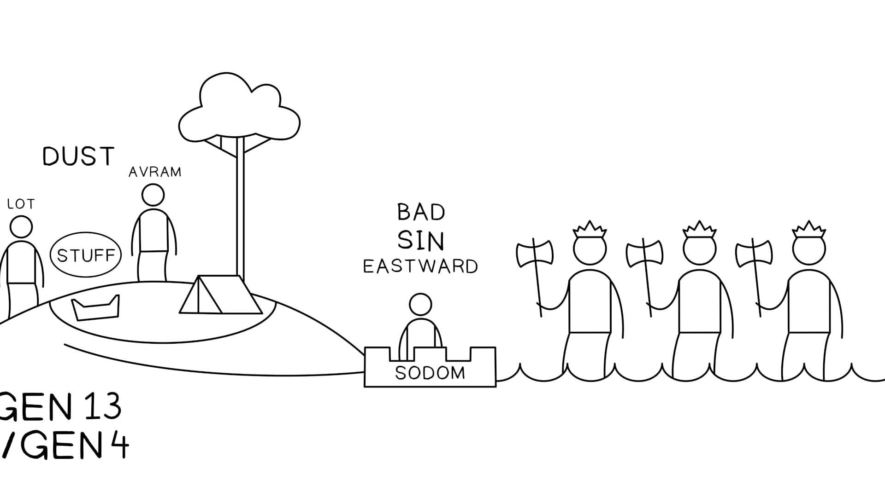

Gênesis 14:1-24. Tradução e Design Literário por Tim Mackie para o BibleProject Classroom: Abraham (2021). Genesis 14:1-24. Translation and Literary Design by Tim Mackie for BibleProject Classroom: Abraham (2021).
A história destaca essas listas repetidas de reis. As listas são organizadas em padrões simétricos, e os nomes dos reis estão carregados de jogos de palavras sarcásticos. The story highlights these repeated lists of kings. The lists are arranged in symmetrical patterns, and the names of the kings are loaded with sarcastic wordplays.
Listas de Reis Mesopotâmicos e Cananeus. Criado por Tim Mackie para BibleProject Classroom: Abraham (2021). Mesopotamian and Canaanite Kings Lists. Created by Tim Mackie for BibleProject Classroom: Abraham (2021).
A lista de nove reis é repetida duas vezes, mas não identicamente. A ordem dos quatro reis mesopotâmicos é invertida para que o rei de Shinar seja o número um na primeira lista, e o rei de Elam seja o número um na segunda lista. The list of nine kings is repeated two times, but not identically. The order of the four Mesopotamian kings is inverted so that the king of Shinar is number one in the first list, and the king of Elam is number one in the second list.
Esta variação aparentemente aleatória torna-se significativa quando a história é mapeada em sua sequência literária. This seemingly random variation becomes meaningful when the story is mapped out in its literary sequence.
Gênesis 14:1-10 Reis. Design Literário por Tim Mackie para BibleProject Classroom: Abraham (2021). Genesis 14:1-10 Kings. Literary Design by Tim Mackie for BibleProject Classroom: Abraham (2021).
Os nomes foram listados em padrão simétrico, que coloca os reis mesopotâmicos nos locais externos e destaca os clãs de gigantes na posição central. Cada uma dessas características de design parece intencional e comunica algo significativo. The names have been listed in symmetrical pattern, which places the Mesopotamian kings at the outer locations and highlights the giant clans in the center position. Each of these design features seems intentional and communicates something significant.
Os reis mesopotâmicos invertidos: Os dois reis destacados são os governantes de Sinar e Elão. Ambos os reinos desempenham um papel significativo na história bíblica mais ampla. The inverted Mesopotamian kings: The two kings highlighted are the rulers of Shinar and Elam. Both kingdoms play a significant role in the larger biblical story.
Sinar foi mencionado pela última vez em Gênesis 11:1-2, na genealogia de Cam, filho de Noé: “E aconteceu que, partindo eles do oriente, acharam um vale na terra de Sinar; e habitaram ali” e começaram a construir a Babilônia. Shinar was last mentioned in Genesis 11:1-2, in the genealogy of Ham, son of Noah: “And all the land ... journeyed east and found a plain in the land of Shinar and they settled there” and began building Babylon.
Sinar é um termo raro usado para descrever a planície de inundação em que a Babilônia e seus zigurates foram construídos. Cada vez que aparece na Bíblia Hebraica, é sinistro: Shinar is a rare term used to describe the flood plain in which Babylon and its ziggurats were built. Every times it appears in the Hebrew Bible, it is ominous:
“Elão” é a palavra hebraica para “Pérsia”, e foi mencionada pela última vez na genealogia de Sem, filho de Noé: “Os filhos de Sem: Elão, Assur, Arfaxade, Lude e Arã” (Gn. 10:22). “Elam” is the Hebrew word for “Persia,” and was last mentioned in the genealogy of Shem, son of Noah: “The sons of Shem: Elam, Ashur, Arphaxad, Lud, and Aram” (Gen. 10:22).
Interessantemente, Elão/Pérsia é a nação que derruba a Babilônia e se torna o instrumento de Deus para restaurar os israelitas exilados de volta à terra prometida (ver Esdras 1:1-11). Interestingly, Elam/Persia is the nation that topples Babylon and becomes the instrument of God to restore the exiled Israelites back to the promised land (see Ezra 1:1-11).
Mais tarde, o rei da Babilônia (descendente de Cam) exilará os descendentes de Avram para a terra de Sinar, e Elão (filho de Sem) é a nação que restaurará esses exilados de volta à sua terra natal. Later, the king of Babylon (descendant of Ham) will exile Avram’s descendants to the land of Shinar, and Elam (son of Shem) is the nation that will restore those exiles back to their homeland.
A lista de reis cananeus é repetida de forma idêntica, e a maioria dos nomes vem da genealogia de Cam em Gênesis 10. The list of Canaanite kings is repeated identically, and most of of the names come from the genealogy of Ham in Genesis 10.
66 The sons of Ham were Cush and Mizraim and Put and Canaan. ... The sons of Ham were Cush and Mizraim and Put and Canaan. ... 1919 The territory of the Canaanite extended from Sidon as you go toward Gerar, as far as Gaza; as you go toward The territory of the Canaanite extended from Sidon as you go toward Gerar, as far as Gaza; as you go toward Sodom and and Gomorrah and and Admah and and Zeboiim, as far as Lasha., as far as Lasha.
Essa ligação precisa dos reis aos filhos de Noé em Gênesis 10 é intencional. O autor está tentando mostrar que esta batalha é um desdobramento da rivalidade entre irmãos que Noé antecipou em Gênesis 9:25-26. This precise linking of the kings to the list of Noah’s sons in Genesis 10 is intentional. The author is trying to show that this battle is an outworking of the sibling rivalry that Noah anticipated in Genesis 9:25-26.
2424 When Noah awoke from his wine and found out what his youngest son had done to him, When Noah awoke from his wine and found out what his youngest son had done to him, 2525 he said, he said,
“Cursed be Canaan!“Cursed be Canaan!
The lowest of The lowest of slaves
will he be to his brothers.”will he be to his brothers.”
2626 He also said, He also said,
“Praise be to the LORD, the God of Shem!“Praise be to the LORD, the God of Shem!
May Canaan be the May Canaan be the slave of Shem." of Shem."
44 For twelve years [the sons of Ham] had been For twelve years [the sons of Ham] had been slaves of Kedorlaomer, and in the thirteenth year they rebelled, of Kedorlaomer, and in the thirteenth year they rebelled, 55 and in the fourteenth year Kedorlaomer came, and the kings who were with him [sons of Shem] and in the fourteenth year Kedorlaomer came, and the kings who were with him [sons of Shem]
Os reis orientais vêm a Canaã e ferem os clãs de gigantes associados aos Nefilim, os guerreiros gigantes do tempo do dilúvio. The eastern kings come to Canaan and strike the giant clans associated with the Nephilim, the giant warriors from the time of the flood.
Os Refains eram um clã de gigantes, com um rei chamado Ogue que governava em Asterote, na região de Basã, no lado leste do rio Jordão. The Rephaim were a clan of giants, with a king named Og who ruled in Ashteroth, in the region of Bashan on the east side of the Jordan River.
88 So we took the land at that time out of the hand of the two kings of the Amorites who were beyond the Jordan, from the Valley of the Arnon to Mount Hermon ... So we took the land at that time out of the hand of the two kings of the Amorites who were beyond the Jordan, from the Valley of the Arnon to Mount Hermon ... 1010 all the cities of the tableland and all Gilead and all Bashan ... cities of the kingdom of Og in Bashan. all the cities of the tableland and all Gilead and all Bashan ... cities of the kingdom of Og in Bashan. 1111 (For only Og the king of Bashan was left of the remnant of the Rephaim. Behold, his bed was a bed of iron. Is it not in Rabbah of the Ammonites? Nine cubits was its length, and four cubits its breadth, according to the common cubit.) (For only Og the king of Bashan was left of the remnant of the Rephaim. Behold, his bed was a bed of iron. Is it not in Rabbah of the Ammonites? Nine cubits was its length, and four cubits its breadth, according to the common cubit.)
all the kingdom of Og in Bashan, who reigned in Ashtaroth and in Edrei (he alone was left of the remnant of the Rephaim); these Moses had struck and driven out.all the kingdom of Og in Bashan, who reigned in Ashtaroth and in Edrei (he alone was left of the remnant of the Rephaim); these Moses had struck and driven out.
Os tradutores da Septuaginta Grega de Gênesis traduziram os Refains de Gênesis 14:5 com a palavra grega gigantas (γίγαντας) = “gigantes”, a mesma palavra que usaram para traduzir “Nefilim” em Gênesis 6:4. The Greek Septuagint translators of Genesis rendered the Rephaim of Genesis 14:5 with the Greek word gigantas (γίγαντας) = “giants,” the same word they use to translate “Nephilim” in Genesis 6:4.
Os Zuzins, também conhecidos como “Zanzumins” (זמזמים), viviam na região habitada mais tarde pelos amonitas, que eram na verdade parte dos clãs gigantes Refains. The Zuzim, also known as the “Zamzummim” (זמזמים), lived in the region later inhabited by the Ammonites, who were actually part of the Rephaim giant clans.
1919 "... I will not give you any of the land of the people of Ammon as a possession ... "... I will not give you any of the land of the people of Ammon as a possession ... 2020 It is also counted as a land of Rephaim. Rephaim formerly lived there—but the Ammonites call them Zamzummim— It is also counted as a land of Rephaim. Rephaim formerly lived there—but the Ammonites call them Zamzummim— 2121 a people great and many, and a people great and many, and tall as the Anakim; but the LORD destroyed them before the Ammonites, and they dispossessed them and settled in their place; but the LORD destroyed them before the Ammonites, and they dispossessed them and settled in their place
Os Emins também eram na verdade parte dos clãs gigantes Refains. The Emim were also actually part of the Rephaim giant clans.
1010 The Emim formerly lived there, a people great and many, and tall as the Anakim. The Emim formerly lived there, a people great and many, and tall as the Anakim. 1111 Like the Anakim they are also counted as Rephaim, but the Moabites call them Emim. they are also counted as Rephaim, but the Moabites call them Emim.
Todas essas tribos estão conectadas aos Anaquins e aos Nefilim desde o tempo do dilúvio. All of these tribes are connected to the Anakim and the Nephilim from the time of the flood.
2727 And they told him, “We came to the land to which you sent us. It flows with milk and honey, and this is its fruit. And they told him, “We came to the land to which you sent us. It flows with milk and honey, and this is its fruit. 2828 However, the people who dwell in the land are strong, and the cities are fortified and very large. And besides, we saw the descendants of Anak there. However, the people who dwell in the land are strong, and the cities are fortified and very large. And besides, we saw the descendants of Anak there. 2929 The Amalekites dwell in the land of the Negeb. The Hittites, the Jebusites, and the Amorites dwell in the hill country. And the Canaanites dwell by the sea, and along the Jordan." ... The Amalekites dwell in the land of the Negeb. The Hittites, the Jebusites, and the Amorites dwell in the hill country. And the Canaanites dwell by the sea, and along the Jordan." ... 3232 "The land, through which we have gone to spy it out, is a land that devours its inhabitants, and all the people that we saw in it are of great height. "The land, through which we have gone to spy it out, is a land that devours its inhabitants, and all the people that we saw in it are of great height. 3333 And there we saw the Nephilim (the sons of Anak, who come from the Nephilim), and we seemed to ourselves like grasshoppers, and so we seemed to them.” And there we saw the Nephilim (the sons of Anak, who come from the Nephilim), and we seemed to ourselves like grasshoppers, and so we seemed to them.”
Toda essa lista de habitantes de Canaã e da Transjordânia fornece uma contabilidade de todas as regiões em que os israelitas entrarão mais tarde, de Números 20 em diante. Essas regiões estavam cheias de habitantes anteriores, clãs de gigantes que foram tratados pela justiça providencial de Deus muito antes de Israel entrar na terra. This entire list of the inhabitants of Canaan and the Transjordan provides an accounting for all the regions that the Israelites will later enter in Numbers 20 onward. These regions were filled with earlier inhabitants, clans of giants who were dealt with by God’s providential justice long before Israel entered into the land.
99 And the LORD said to me, "Do not harass Moab or contend with them in battle, for I will not give you any of their land for a possession, because I have given Ar to the people of Lot for a possession." And the LORD said to me, "Do not harass Moab or contend with them in battle, for I will not give you any of their land for a possession, because I have given Ar to the people of Lot for a possession." 1010 (The (The Emim formerly lived there, formerly lived there, a people great and many, and tall as the Anakim. . 1111 Like the Anakim they are also counted as Like the Anakim they are also counted as Rephaim, but the Moabites call them , but the Moabites call them Emim. . 1212 The The Horites also lived in also lived in Seir formerly, but the people of Esau dispossessed them and destroyed them from before them and settled in their place, as Israel did to the land of their possession, which the LORD gave to them.) formerly, but the people of Esau dispossessed them and destroyed them from before them and settled in their place, as Israel did to the land of their possession, which the LORD gave to them.)
1818 "Today you are to cross the border of Moab at Ar. "Today you are to cross the border of Moab at Ar. 1919 And when you approach the territory of the people of Ammon, do not harass them or contend with them, for I will not give you any of the land of the people of Ammon as a possession, because I have given it to the sons of Lot for a possession." And when you approach the territory of the people of Ammon, do not harass them or contend with them, for I will not give you any of the land of the people of Ammon as a possession, because I have given it to the sons of Lot for a possession." 2020 (It is also counted as a land of (It is also counted as a land of Rephaim. Rephaim formerly lived there—but the Ammonites call them formerly lived there—but the Ammonites call them Zamzummim— — 2121 a people great and many, and tall as the Anakim; but the LORD destroyed them before the Ammonites, and they dispossessed them and settled in their place, ; but the LORD destroyed them before the Ammonites, and they dispossessed them and settled in their place, 2222 as he did for the people of Esau, who live in Seir, when he destroyed the Horites before them and they dispossessed them and settled in their place even to this day. as he did for the people of Esau, who live in Seir, when he destroyed the Horites before them and they dispossessed them and settled in their place even to this day. 2323 As for the Avvim, who lived in villages as far as Gaza, the Caphtorim, who came from Caphtor, destroyed them and settled in their place.) As for the Avvim, who lived in villages as far as Gaza, the Caphtorim, who came from Caphtor, destroyed them and settled in their place.)
O discurso de Moisés em Deuteronômio 2 pressupõe uma história de fundo do julgamento de Deus sobre os clãs de gigantes no lado leste do Jordão, e Gênesis 14 fornece essa narrativa. O ponto do discurso de Moisés é que, assim como Deus providencialmente deu outras terras aos descendentes não escolhidos e parentes de Avraham (Ló ou Esaú), assim também ele usará os israelitas para desapossar os cananeus. Gênesis 14 fornece a história de fundo providencial, implicando que Deus usou os reis orientais liderados pela Babilônia como um instrumento divino de julgamento sobre os clãs gigantes de Canaã e da Transjordânia. No entanto, por causa da arrogância da Babilônia ao capturar Ló, a semente de Avraham, Deus então liberta a coalizão para Avraham. Moses’ speech in Deuteronomy 2 assumes a backstory of God’s judgment on the giant clans on the east side of the Jordan, and Genesis 14 supplies that narrative. The point of Moses’ speech is that just as God providentially gave other lands to the non-chosen descendants and relatives of Avraham (Lot or Esau), so also he will use the Israelites to dispossess the Canaanites. Genesis 14 provides the providential backstory, implying that God used the eastern kings led by Babylon as a divine instrument of judgment on the giant clans of Canaan and Transjordan. However, because of Babylon’s over-assertion in the capturing of Lot, the seed of Avraham, God then delivers the coalition over to Avraham.
Este capítulo, então, torna Avram superior aos reis orientais, aos cananeus e a todos os gigantes da antiguidade. Também qualifica Avram para ser o verdadeiro herdeiro dessas mesmas terras, porque ele foi o seu libertador. This chapter, then, makes Avram the superior to the eastern kings, the Canaanites, and all the giants of the ancient time. It also qualifies Avram to be the true inheritor of these very lands, because he was their deliverer.
Tudo isso parece alinhado com uma estratégia que coloca os retornados do exílio em analogia com Avram. Eles também (re)entraram em “Canaã” (= Yehud Persa) depois que Deus usou a Babilônia para julgar os habitantes anteriores (os reinos israelitas e judeus junto com a população não-israelita), e se viram chamados a herdar de acordo com a promessa de Deus. This all seems aligned with a strategy that sets the returnees from exile on analogy with Avraham. They too (re)entered “Canaan” (= Persian Yehud) after God had used Babylon to judge the previous inhabitants (the Israelites and Judean kingdoms along with the non-Israelite population), and found themselves called to inherit it according to God’s promise.
Lembre-se que Gênesis 11-14 refaz a sequência temática de Gênesis 1-9, e Gênesis 14 chega precisamente no momento em que estamos esperando um momento de dilúvio/re-criação. A história está cheia de conexões únicas com o início da narrativa do dilúvio. Recall that Genesis 11-14 retraces the thematic sequence of Genesis 1-9, and Genesis 14 comes at the precisely the moment we are expecting a flood/re-creation moment. The story is filled with unique connections to the onset of the flood narrative.
| Genesis 6-8Genesis 6-8 | Genesis 14:1-24Genesis 14:1-24 |
|---|---|
|
Os poderosos guerreiros violentos (Heb. gibborim), também chamados de “Nefilim, homens de fama” (observe a proeminência de nomes neste capítulo) derramam muito sangue na terra, enchendo-a com violência.
The mighty violent warriors (Heb. gibborim), also called “Nephilim, men of the name” (notice the prominence of names in this chapter) spill much blood on the land, filling it with violence.
Gen. 6:4 Os Nefilim estavam na terra naqueles dias, e também depois, quando os filhos de Deus entraram às filhas dos homens, e elas lhes deram filhos. Esses eram os valentes, homens de fama.The Nephilim were on the earth in those days, and also afterward, when the sons of God came in to the daughters of men, and they bore children to them. Those were the mighty men who were of old, men of the name. Gen. 6:13 Então disse Deus a Noé: “O fim de toda a carne é vindo perante a minha face; porque a terra está cheia de violência por causa deles; e eis que os destruirei com a terra.Then God said to Noah, “The end of all flesh has come before me; for the earth is filled with violence because of them; and behold, I am about to cause their ruin them with the land. |
|
|
As águas do dilúvio são chamadas de “poderosas e fortes” (Heb. gavar, גבר), da mesma raiz que “poderoso guerreiro” (Heb. gibbor, גבור).
The flood-waters are called “mighty and strong” (Heb. gavar, גבר), from the same root as “mighty warrior” (Heb. gibbor, גבור).
Gen. 7:18-20 1818 E as águas prevaleceram (Heb. gavar, גבר) e cresceram grandemente sobre a terra...The water was mighty (Heb. gavar, גבר) and increased greatly upon the land... 1919 E as águas prevaleceram (Heb. gavar, גבר) excessivamente sobre a terra, e todos os altos montes debaixo de todos os céus foram cobertos.The water was mighty (Heb. gavar, גבר), very very much upon the land, and all the high hills under the skies were covered. 2020 Quinze côvados acima prevaleceram (Heb. gavar, גבר) as águas; e os montes foram cobertos.The water was mighty (Heb. gavar, גבר) fifteen cubits higher, and the mountains were covered. |
|
|
Gen. 7:11 O dilúvio acontece quando as “fontes do grande abismo” se rompem, e as “janelas” (Heb. ‘arubbot, ארבת) se abrem.The flood happens as the “fountains of the deep abyss” split open, and the “windows" (Heb. ‘arubbot, ארבת) open up.
Gen. 11:3 A torre e a cidade de Babilônia, que foram espalhadas em um julgamento semelhante a um dilúvio, foram construídas usando “betume” (חמר) como argamassa.The tower and city of Babylon, which were scattered in a flood-like judgment, were built by “tar” (חמר) used as mortar. |
Os reis de Sodoma e Gomorra caem em poços de betume.
The kings of Sodom and Gomorrah fall into pits of pitch.
Gen. 14:10 E o vale de Sidim estava cheio de poços de betume (בארת בארת de חמר).Now, the valley of Siddim has pits, pits (בארת בארת) of tar (חמר). |
|
Após o dilúvio, Noé e sua família são um remanescente (נשאר/שאר), e eles escapam e são colocados sobre as “montanhas de Ararat”.
After the flood, Noah and his family are a remnant (נשאר/שאר), and they escape and are placed upon the “mountains of Ararat.”
Gen. 7:23 “Somente Noé, junto com aqueles que estavam com ele na arca, ficou restante (נשאר).”“Only Noah, together with those with him in the ark, was left remaining (נשאר).” Gen. 8:4 “No sétimo mês... a arca repousou sobre os montes (הר) de Ararat”“In the seventh month ... the ark rested upon the mountains (הר) of Ararat” |
Após o ataque semelhante a um dilúvio dos reis, os sobreviventes fogem para as montanhas.
After the flood-like attack of the kings, the survivors flee to the mountains.
Gen. 14:10 ... e os que restaram fugiram para os montes (הר).... and those left remaining fled to the mountains (הר). |
| Gen. 8:21 Após o dilúvio, Deus se refere às águas como um “ferir” sobre a terra (נכה) — “Eu nunca mais tornarei a ferir (נכה) a terra como tenho feito.”After the flood, God refers to the waters as a “strike” upon the land (נכה) — “I will never again strike (נכה) the land as I have done.” |
Os reis mesopotâmicos vêm e “ferem” (נכה) os clãs de gigantes.
The Mesopotamian kings come and “strike” (נכה) the giant clans.
Gen. 14:5, 7 Quedorlaomer veio... e feriram (נכה) os refains... e eles feriram (נכה) o campo dos amalequitas.Khedorlaomer came ... and struck (נכה) the Rephaim ... and they struck (נכה) the field of the Amalekites. |
|
Deus faz uma promessa de aliança a Noé, de que proverá um refúgio para ele e sua família na arca construída de árvores (עץ), onde ele pode viver em segurança com os animais e bastante comida.
God makes a covenant promise to Noah, that he will provide a refuge for him and his family in the ark built of trees (עץ), where he can live in safety with the animals and plenty of food.
Gen. 6:14 “Faze para ti uma arca da madeira (עץ)...”“Make for yourself an ark of gopher trees (עץ) ...” Gen. 6:18-19 “Mas eu estabelecerei a minha aliança (ברית) com você e você entrará na arca, você e seus filhos e suas esposas e as esposas de seus filhos... para mantê-los vivos com você.”“But I will set up my covenant (ברית) with you and so you will enter the ark, you and your sons and your wives and your sons wives and every living thing of all flesh ... in order to keep them alive with you.” Gen. 6:21 “E leva (לקח) para ti comida (מאכל) que comerás (אכל) e ajunta-a para ti.”“And take (לקח) for yourself food (מאכל) that you will eat (אכל) and gather it for yourself.” |
Gen. 14:13 Enquanto a batalha se enfurece ao redor de Avram, ele se senta em paz entre os carvalhos de Manre.While the battle rages around Avram, he sits in peace among the oak trees of Mamre.
Gen. 14:13 Enquanto os cananeus corruptos estão sendo feridos ao redor, um grupo de cananeus que está em uma aliança (ברית) com Avram, sentados com ele, estão perfeitamente seguros.While corrupt Canaanites are being struck all around, a group of Canaanites who are in a covenant (ברית) with Avram, sitting with him, are perfectly safe Gen. 14:11-12 Os reis mesopotâmicos vêm e “tomam” (לקח) tanto a “comida” (אכל) quanto Ló de Sodoma.The Mesopotamian kings come and “take” (לקח) both the “food” (אכל) and Lot from Sodom. |
|
Gen. 5:21, 28-29 Noé é o bisneto de Enoque ( חנ ו ך )Noah is the great-grandson of Enoch ( חנ ו ך )
Gen. 5:29 Noé ( נח ) ... "Este nos consolará ( י נח מנ ו )"Noah ( נח ) ... "this one will comfort us ( י נח מנ ו )" Gen. 6:8 Mas Noé ( נח ) achou graça ( חן ) aos olhos de YahwehBut Noah ( נח ) found favor (חן) in the eyes of Yahweh |
Gen. 14:14 Avram prepara seus “homens treinados” ( חנ י כ י ו ).Avram prepares his “dedicated men” ( חנ י כ י ו ). |
| Os Reis Mesopotâmicos Como Um Dilúvio de Violência. Criado por Tim Mackie para o BibleProject Classroom: Abraham (2021). Mesopotamian Kings As a Flood of Violence. Created by Tim Mackie for BibleProject Classroom: Abraham (2021). | |
Esses hiperlinks estabelecem Avram, a semente de Noé, como um novo Noé que é libertado do dilúvio de violência dos reis mesopotâmicos e que se torna o agente da libertação e julgamento de Deus. These hyperlinks establish Avram, the seed of Noah, as a new Noah who is delivered from the Mesopotamian kings’ flood of violence and who becomes the agent of God’s deliverance and judgment.
Avram é o agente da libertação de Deus porque os cananeus que estão em uma aliança com ele são libertados e seguros do ataque mesopotâmico. Avram is the agent of God’s deliverance because the Canaanites who are in a covenant with him are delivered and safe from the Mesopotamian attack.
Avram é o agente do julgamento de Deus porque ele e os cananeus com ele contra-atacam os reis mesopotâmicos, vencendo-os e resgatando os cativos de Sodoma. Avram is the agent of God’s judgment because he and the Canaanites with him strike back against the Mesopotamian kings, overcoming them and rescuing the captives of Sodom.
Nesta história, os cananeus amaldiçoados são atingidos por reis perversos do leste, que são retratados como um dilúvio de perversidade. Embora a providência de Deus não seja evocada explicitamente, parece ser um julgamento sobre os cananeus, que, por extensão da “grande maldade e pecado” de Sodoma e Gomorra (Gn. 13:13), merecem a justiça divina. Mas, em contraste com o dilúvio, os reis violentos do leste vêm liderados pela Babilônia. Isso nos prepara para o retrato da Babilônia como “servo” de Deus em Jeremias 25, que será usado por um tempo (paralelo a Gn. 14:1-10) até que ultrapasse seus limites (paralelo a Gn. 14:11-24) e se torne o objeto do julgamento de Deus em vez de seu instrumento. In this story, the cursed Canaanites are struck by wicked kings of the east, who are depicted as a flood of wickedness. While God’s providence is not explicitly evoked, it does appear to be a judgment on the Canaanites, who, by extension from Sodom and Gomorrah’s “great evil and sin” (Gen. 13:13), deserve divine justice. But, in contrast to the flood, the violent kings of the east come led by Babylon. This prepares us for the portrait of Babylon as God’s “servant” in Jeremiah 25, who will be used for a time (paralleling Gen. 14:1-10) until he oversteps his bounds (paralleling Gen. 14:11-24) and becomes the object of God’s judgment instead of its instrument.
Os cananeus são retratados de duas maneiras. The Canaanites are portrayed in two ways.
Este retrato de Avram como o guerreiro de guerrilha é único nas histórias de Avram porque ele é geralmente pacífico e não-violento em seus relacionamentos com os cananeus. Sua força de combate de 318 é um detalhe estranho, explicado por sua relação com Eliézer na próxima história. This portrait of Avram as the guerrilla warrior is unique in the Avram stories because he is usually peaceable and non-violent in his relationships with the Canaanites. His fighting force of 318 is an odd detail, explained by its relation to Eliezer in the next story.

Um Dilúvio de Reis Guerreiros. Criado por Tim Mackie para o BibleProject Classroom: Abraham (2021). Flood of Warrior Kings. Created by Tim Mackie for BibleProject Classroom: Abraham (2021).
Como os reis violentos de Gênesis 14 reproduzem o tema do dilúvio? Como isso nos ajuda a entender a importância deste episódio na história de Avram? How do the violent kings of Genesis 14 replay the flood theme? How does this help us understand the importance of this episode in Avram’s story?